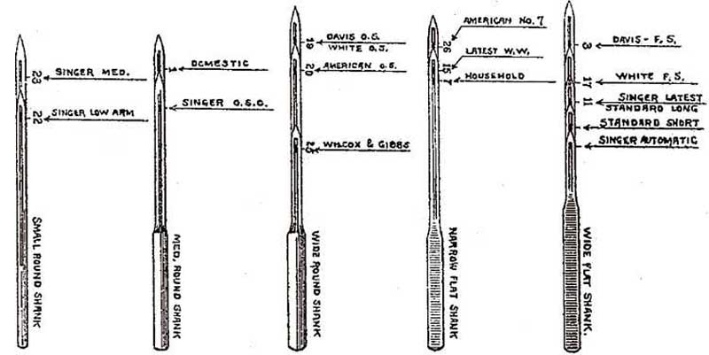

Boye Oh Boye: A History of the James Boye Commodity Cabinet
by Claire Sherwell
and Bill Grewe
With grateful thanks to Chrys Gunther and Daveofsuffolk
The original name for the Boye rotary needle case as used by the inventor, James H Boye, was Commodity Cabinet, rather than needle case. Having a simple to use merchant display cabinet was a big selling point for Boye's traveling salesmen. Boye display cases were made in great numbers, with most outlasting the stores in which they were used. Inside the display cases tubes or packets contained needles, shuttles, bobbins or other merchandise. These cabinets were designed for ease of use and to prevent the accidental mixing of items. Such cabinets and cases weren't available in Europe or Australia.
Wooden Case
Boye initially designed and patented a commodity cabinet as early as 1903 in Minneapolis, MN. His main idea was to provide an improved needle case and index to assist in providing the correct needle for different American badged sewing machines.
At that time, Boye said needles were sold under about 150 machine names and it was well known that many of these used the same needle. In fact the 'main machines' on the market used only 12 different types of needles. So Boye began with an index of these names and needle types pasted into the lid of a box holding color-coded tubes or boxes (he suggested blue, green, red and yellow). This first box was rectangular with a hinged lid. As an example, if you looked for an "Ajax" machine it would have a red mark indicating that the proper make of needle would be in the row of red-topped boxes/tubes. It would be easy to replace a needle case in the correct area due to the color-coding.
J H Boye example patented December 22, 1903
Courtesy of Daveofsuffolk
The original interior reveals it was destined to have been used by the Twin City Needle Company in Minneapolis, Manufacturers and Jobbers of needle cases, needles and supplies of all makes of sewing machines, 610 First Avenue South, Minneapolis, MN. That label had been covered over with a Boye Needle Company interior from 72 & 74 Wabash Avenue, Chicago, Ill.
Metal Cases
It wasn't until 1906, with the Boye Needle Company established and based in Chicago, Ill., that James Boye's improvements gathered momentum with the Commodity Carrier or Commodity Cabinet. The Commodity Cabinet became circular on a square base with a drawer, intended for holding various small items of merchandise, in other words the carrier or cabinet could be used for other merchandise such as feet, hand sewing needles or other small parts. It would be set on a store counter from which to serve customers. Boye needed to make sure that the general, hardware or furniture store owner, a non-sewing machine expert, could quickly find the right product for the customer. For this he devised a numbering system on top of the case which linked almost any sewing machine names to their proper needles, shuttles and bobbins, just by turning the arrow on the top. If you weren't sure of your sewing machine name or manufacturer you could look at the pictures of the shuttles on the case and compare needle sizes.
To this end, in December 1906 he patented a chart categorizing full size illustrations of the standard needle types using the same formation of shank, eye etc so that you could place a needle on top to compare. It was more detailed than Wheeler & Wilson's 1905 chart.

The illustration shows Boye's patent, illustrating the relative sizes and features of the main needles on the market at the time compared with an example from a Commodity Case.
Boye tubes from the earliest, without a flange, to the later plastic version
Courtesy of Daveofsuffolk
On Boye Commodity Cabinets, machine names are generally listed in alphabetical order, with the red ones either being the first name of each letter of the alphabet or the most popular names, the others are in black. Machine names with asterisks are also possible rotary models and would take a different needle and no shuttle.
This commodity cabinet, patented 1906, includes rotary parts for Wheeler & Wilson 9 and Standard's rotary machines
Courtesy of Daveofsuffolk
In looking at the 1906 patent, James Boye confirms his Commodity Cabinets were designed "to hold various small articles of merchandise to enable them to be readily accessible to the merchant in making sales. .... The cabinet may be put to any desired use. ... with a plurality of chambers for receiving different commodities."
Courtesy of Bill Grewe
The interesting feature of this commodity cabinet is the spool holder attached
to the arrow in the center. This would have had a spool of thread with a needle
attached via a slot underneath, so that the
salesman could demonstrate the Boye needle threader. Boye had two patents for
needle threaders, both from 1908.
Courtesy of Bill Grewe & Johnny Orona
Twin Boye: On the top, held in a sliding metal cradle, is a standard early Boye case with patents from 1906 and 1907. Underneath is another Boye case with metal feet to stand on a counter and the metal supports to hold the top case. In addition to the normal case patents, the bottom case has "other patents are pending". A first look at the bottom case would give one the impression that Boye is now selling sewing machine feet or attachments. When in fact the pictures of sewing machine feet and shanks are only another way for Boye to get the customer the right product. Also on the bottom case are 145 more names and numbers for sewing machines. These additional listings, with names like Druid, Minnehaha and Stimulator, are mostly for machines from the National Sewing Machine Co.
Inside the bottom case are slots for the typical Boye wooden tubes and, in the place where the shuttles would normally be, are a number of slots that could hold bobbins or the neat little metal Boye flip-top hand needle cases. The foot & shank pictures were a logical step for Boye to make for product identification, but it is easy to see how this never caught on. First, there is the mechanics of using the two cases. The dual cases start out neatly stacked, but to get at the bottom case you have to slide the top case away, not an easy move given the weight involved, and that nearly doubles the area of the cases. No merchant space saved there. Second, it is most likely that Boye found that the addition of 145 mostly obscure sewing machine listings, and the addition of the foot identification pictures, while nice to have, weren't worth the extra effort or size for the merchant.
Eventually, Boye did away with the large wooden cabinet and stuck with the separate metal commodity cases. Other Boye sewing products would also be marketed in their own individual displays. The emphasis on simpler display designs was most likely a result of the experience handling the Twin Boyes.
Treadle Belts
Boye used an eye-catching design for selling individual treadle belts. It was common practice to hang up treadle belts in stores, or leave them on a counter, where dust and extra handling could cause them to deteriorate. Boye's method kept belts coiled compactly, left them protected and provided useful advertising. The tin measures only 4 1/2" x 1/4". The small size and scarcity of this item may well indicate that it was designed to be disposable.
Picture courtesy of Daveofsuffolk
Boye patented this item in 1909 and it was John Flannery, on behalf of Boye, who registered the tin on January 31, 1918. There was also a later invention by the Boye Needle Company concerning treadle belt displays. Adverts shown on the tin are for Boye needles, shuttles, bobbins, oil and threaders. Adverts inside the tin are: The Boye Fruit Jar Wrench (John L Needlham for Boye, 1917), The Boye Apple Corer (invented by Charles P Benedict of Montclair, New Jersey for Boye, 1916), The Boye Can Opener (1913) and The Boye Nutmeg Grater (1914).
Blue Boye
Courtesy of Bill Grewe
The Blue Boye was the last style of Commodity Cabinet. It has no patent markings and is recognizable by its blue circle. There are no pictures of the shuttles, but the case (and the order form of the period) listed shuttles #3,5,7,9,11,13,15,19 for sale; the other numbers not having enough machines to warrant continued production.
The Boye Trademark (Flanged Tube with "Boye" on it) was registered in January 1909, having been used since November 1, 1907, and renewed in January 1929, but it was not renewed in 1949.
Known Boye Case Markings
1. 1906/1906/1907 Patents listed in center of the case
2. 1906/1906/1907/1909/1910
3. 1925/1929 Patent - 9R
4. 1925/1929 - 10R
5. 1929 - 11R
6. No dates - 12R
7. No dates - 13RN
8. No dates - 14RN
9. No dates - Blue Middle
If you have a case with different information on it, please drop a note into the NeedleBar Forum or write to nbforum@btinternet.com
It seems reasonable that as Boye got into selling more diverse items and were making more changes to products, they could no longer distinguish iterations via patent dates, so they started using numbers and letters on the cases. It appears that the 1930's era case had an 11 R(otary) and the 1950's era case had 14 R(otary) N(eedle).
Numbering Mystery
The focus of Boye's commodity case was always to make things simpler, easier, and foolproof for the merchant to make a sale. That's why it is something of a mystery as to why there would be two different numbering systems on the Boye metal cases.
The earliest production of the Boye metal cases with patent dates of 1906 and 1907 used a numbering system from 1 to 25. One of these numbers designated the proper shuttle & bobbin and one number designated the proper needle for each of the 197 sewing machine models listed around the case. Sometime after the first batch of cases was produced another batch of cases with the 1906 and 1907 patents came out with both a different lettering font and a different numbering system. With the exception of the addition of numbers 2 1/2 and 20 1/2, this revised numbering system would remain unchanged for the next 50+ years of Boye case production. A listing of the numbering changes from the first batch of cases to the second batch is shown here:
Early 1906/1907
patent cases number |
Later 1906/1907
patent cases (and all future Boye cases) number |
1 |
7 |
2 |
8 |
3 |
9 |
4 |
10 |
5 |
13 |
6 |
14 |
7 |
1 |
8 |
2 |
9 |
3 |
10 |
4 |
11 |
15 |
12 |
16 |
13 |
5 |
14 |
6 |
15 |
11 |
16 |
12 |
17 |
17 |
18 |
18 |
19 |
19 |
20 |
20 |
21 |
21 |
22 |
22 |
23 |
23 |
24 |
24 |
25 |
25 |
26 |
26 |
27 |
27 |
This doesn't seem to make much sense. The numbers linking a Boye needle, shuttle or bobbin to the proper sewing machine were an internal Boye system. There was nothing to be gained from changing this system, and much to be lost in confusing the merchants in the stores and confusing Boye employees trying to provide replacement product. Even more mysterious is why Boye would change the numbers from 1 through 16 but leave the numbers from 17 through 25 unchanged on the cases?
One can only conclude that this numbering change was a production mistake or clerical error. In the early years Boye was making many changes to improve the case design. It is likely that with a change in production someone mistakenly changed the numbering system. One can assume that the Boye Company and its customers were not happy about this. But rather than change things back, and make it even more confusing, they kept the new numbers. And it is interesting to note that for the next 50 years there were no changes to the corresponding numbers on the case and very few changes for any of the sewing machines listed. To the extent that even when a sewing machine product was no longer being made, Boye would not mess with the case numbering system!
Boye Sales
Boye cabinets remained the property of the Boye Needle Company and were loaned with the understanding that they were to be used solely for Boye products:
Courtesy of Claire Sherwell
In 1959 a dispenser with 150 tubes, 9 shuttles and 48 bobbin cost the merchant $42.48, with a suggested retail price of $73.05.
Boye recommended cleaning the Commodity Cabinets with only water and a soft cloth. You may have success trying a little sewing machine oil. Failing that, try a non-abrasive mechanics cleaner, in an inconspicuous place, to see if it removes some of the dirt.
Other diverse items patented by the prolific inventor James Boye include, in no particular order:
Nutmeg grater
Standard lamp
Golf Club
Hasp for barn doors
Many items for curtains, curtain rods etc
(Commodity Cabinets were provided to hold these)
Pencil sharpener
Key holder
Shelf support
Toilet case
Penknife
Stair carpet fastener
Grate
Faucet for John L Flannery
Combination thimble & needle holder
Counter display cabinet
Holder for drinking glasses
Holder for pencils & pens
Holder for balls & spools
Message pad
Can opener
Magnifying picture-exhibiting mirror
Drapery attachment for beds
Sash lock
Safety pin
Hook and eye fastener
Paper packages for needles
Needle Threader
Universal attaching means for attachments
All of the above, and more, were James Boye's personal inventions and it was only after 1916 that other inventors patented items for the Boye Company, e.g. jar wrench, apple corer, hasp. John Flannery Jr also started designing for Boye.
Today, the name of Boye is well established in the US, mainly for crochet hooks and knitting needles. The William Wright Co., known as Wrights who sell notions and trims, now owns Boye. The Newell Rubbermaid Company owned both Boye and Wrights and there were many complicated acquisitions and mergers along the way. Yet it will always be the colorful and functional Boye needle case that will cause people to say, "Boye oh Boye that is neat!".
Further pictures will be found in the NeedleBar Picture Library, under Odds & Ends > Needle & Thread Cases
© NeedleBar (c) 2007 & 2008 All Rights Reserved